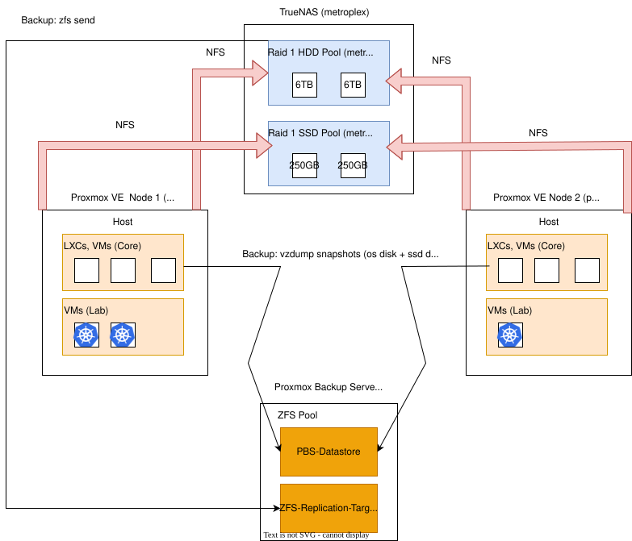

0003-shared-infrastructure-design-and-backups
- Status: Accepted
- Date: 2026-08-09
- Deciders: leloco
Context
We currently operate a single Proxmox VE host (ninja). Due to physical server size constraints, local storage is limited:
-
local-lvm (Thin Pool): Stores root disks for core LXCs and VMs.
-
Internal 2,5" HDD: Serves as a local bulk storage path on ninja.
Problem
To expand our environment, we are onboarding a second standalone Proxmox VE host (primus) to run a high-availability, multi-node Kubernetes cluster across both compute hosts.
Relying solely on local storage creates a single point of failure (SPOF) and prevents workload mobility between hosts.
Decision

1. Compute Topology
- Standalone Hosts:
ninjaandprimusrun independently without a Proxmox cluster quorum. - Core Isolation: LXCs/VMs that represent core infrastructure run on local disks only for max resiliency.
- Lab Mobility: Kubernetes VMs utilize shared storage across both hosts.
2. Centralized Storage (TrueNAS - metroplex)
- Protocol: Shared datasets mounted via NFS to both Proxmox nodes.
- Tiering:
metroplex-fast(RAID 1 SSD, 2x 250GB): K8s VM root disks & high-IOPS persistent volumes.metroplex-bulk(RAID 1 HDD, 2x 6TB): High-capacity bulk data storage.
3. Backup Strategy (PBS - sentinel)
PBS-Datastore: Receivesvzdumpsnapshots (OS & SSD disks) fromninjaandprimus.ZFS-Replication-Target: Receives direct block-levelzfs sendsnapshots from TrueNAS (metroplex-bulk).
4. Core Components need to be labeled with always-on
- Important for running all core components automatically via PBS-backed Cold Migration Pattern (See Implications)
5. Sync will be disabled on the NFS Dataset (metroplex-fast)
- Filesystem: ZFS RAID 1 (2x Consumer SSDs with DRAM cache).
- NFS Sync Optimization: Set
sync = disabledon the NFS Dataset. - Technical Rationale: Consumer SSDs lack dedicated Power-Loss Protection (PLP) capacitors. Native synchronous writes via NFS choke IOPS and drastically reduce throughput. Disabling sync delegates write-buffering to system DRAM, achieving near-wire-speed NFS IOPS for Kubernetes persistent volumes and VM root disks.
- Risk Acceptance: Without an UPS, a sudden power outage may result in up to 5 seconds of unwritten RAM buffer loss, potentially causing filesystem/database inconsistency. This operational risk is accepted to avoid severe I/O bottlenecks and is mitigated by automated PBS snapshots on
sentinel.
6. Dedicated Physical Storage Network (NAS via NFS).
-
- Physical Isolation: Proxmox hosts (
ninja,primus) and TrueNAS (metroplex) are interconnected via a dedicated, unmanaged 2.5 GbE switch on a separate subnet.
- Physical Isolation: Proxmox hosts (
- Dedicated Bandwidth: Guarantees full 2.5 GbE wire-speed (~280–300 MB/s) strictly for NFS storage traffic without interfering with LAN/Management traffic on the standard 1 GbE interfaces.
- Operational Mitigations:
- Power Saving: USB autosuspend is explicitly disabled on Proxmox hosts to prevent NFS disconnects/I/O timeouts.
- MAC-Based Binding: Network interface names are persistently bound to USB MAC addresses to avoid device index drift across reboots.
Consequences
Positive
- Node Maintenance & Fault Tolerance: Kubernetes VMs and stateful application workloads can immediately restart or migrate to the secondary host (
primus/ninja) during outages or planned host maintenance, thanks to shared NFS storage. - Core Infrastructure Resilience: Baseline network services stay completely isolated on local storage (
local-lvm), ensuring they remain operational even if TrueNAS or the storage interconnect experiences downtime. - Efficient Backup Architecture: Deduplicated PBS snapshots cover compute OS/SSD states, while native ZFS replication handles bulk HDD data without choking hypervisor backups.
Negative / Trade-offs
- Manual Core Failover: Core services (like Nginx Proxy Manager) tied to local storage cannot automatically migrate; moving them during host maintenance requires a manual VM/LXC restore or configuration sync on the target host.
- Single Point of Failure (NAS): TrueNAS (
metroplex) becomes a critical dependency for all Kubernetes workloads and shared storage paths. - Strict Backup Requirement: Because core components lack multi-host HA, every local LXC/VM relies entirely on a verified, fast PBS restore strategy for disaster recovery.
Implications
Operational Strategy: Reduce Manual Core Failover:
Since Core Infrastructure LXCs/VMs (e.g., Nginx Proxy Manager) reside on local storage (local-lvm) without automated multi-host HA, host maintenance or migration follows a PBS-backed Cold Migration Pattern:
- Graceful Shutdown: Stop the target LXC/VM on the primary host (
ninja). - On-Demand Snapshot: Trigger a final
vzdumpbackup to the Proxmox Backup Server (sentinel). - Target Restore: Restore the container from
sentineldirectly onto the secondary host's local storage (primus). - Ip Continuity: The service retains its MAC/static network configuration, allowing seamless takeover on
primus.
*RTO (Recovery Time Objective) should be under 2 minutes.